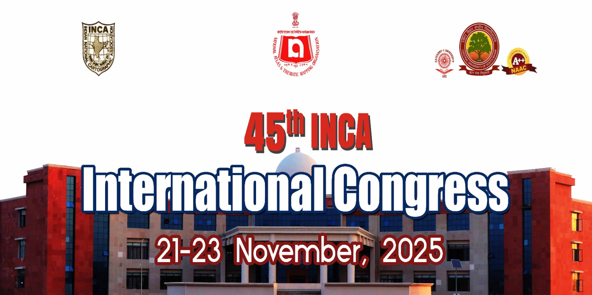

45th INCA International Congress

Dear All,
It gives us immense pleasure to present the first announcement of the 45th INCA International Congress on the theme “Advances in Cartography for a Better Tomorrow”, which will be held from 21st to 23rd November 2025 at the Central University of South Bihar, Gaya, India. The congress is being organized by National Atlas & Thematic Mapping Organisation (NATMO) in association with Indian National Cartographic Association (INCA). This esteemed event aims to bring together a diverse community of researchers, academicians, students, professionals, government officials, NGOs, start-ups, and technology firms working in or passionate about cartography, geospatial technologies, and their multifaceted applications.
The congress will outline the background, objectives, and vision of the gathering while emphasizing its central theme and sub-themes that address the dynamic and transformative role of cartography in building a better future. It offers a platform for participants to exchange cutting-edge research, showcase technological innovations, and explore the practical implementation of geospatial tools in areas such as sustainable development, environmental management, urban planning, disaster risk reduction, and digital governance. Geospatial companies and start-ups are especially encouraged to showcase their products and services to this distinguished and professional audience.
We are confident that the congress will provide a rich forum for interdisciplinary dialogue, professional collaboration, and mutual learning. We warmly invite your enthusiastic participation in making the 45th INCA International Congress a remarkable and impactful event in the advancement of cartographic science.